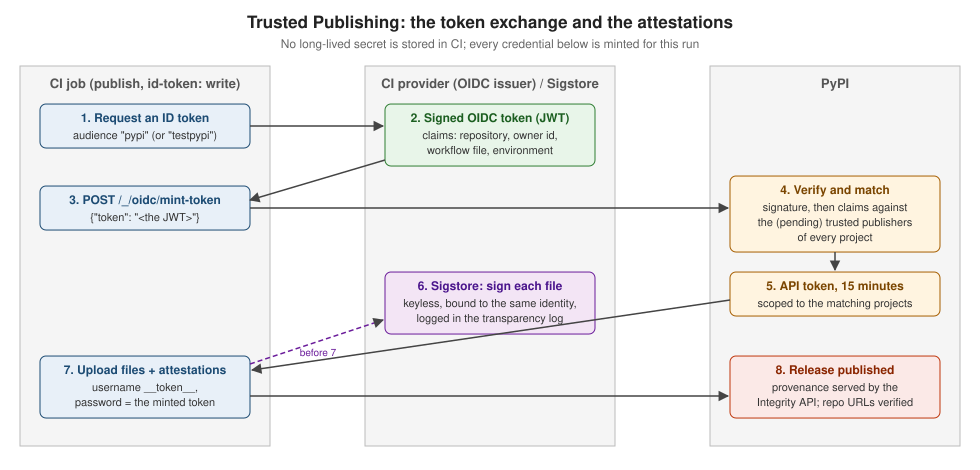

Trusted Publishing & Attestations
|
This content was generated with the assistance of AI and should be verified against the official documentation before being relied on in production. |
API tokens are long-lived secrets that CI has to store and that leak. Trusted Publishing replaces them: PyPI trusts a specific CI workflow, and each run exchanges a short-lived identity token for an upload token. Attestations (PEP 740) go further and let anyone verify which workflow published each file. This page describes both as documented on 2026-10-22. Publishing through them needs a real CI run against PyPI and is not run here; the verification and the public endpoints shown were run against PyPI on that date. The workflows themselves are on GitHub Actions & GitLab CI Release Workflows, and a first introduction is on Virtual Environments & Packaging.

How it works
-
The CI job asks its provider (GitHub, GitLab, Google Cloud, ActiveState) for an OIDC token, a JWT signed by the provider whose claims identify the run: repository, owner, workflow file, environment.
-
It posts that token to PyPI’s
/_/oidc/mint-tokenendpoint. -
PyPI verifies the signature and matches the claims against the trusted publishers configured on projects.
-
If a publisher matches, PyPI returns an API token valid for 15 minutes, scoped to the matching projects.
-
The job uploads with it like with any token (
__token__and the token).
Long-lived tokens can be used by an attacker until someone notices; a minted token expires within minutes, is never stored, and cannot be created outside the configured workflow. Trusted Publishing launched for GitHub on 2023-04-20, was extended to GitLab, Google Cloud and ActiveState on 2024-04-17, and twine has built-in support since 6.1.0 (2025-01-17, "preliminary"). Poetry has none (python-poetry/poetry#7940).
The audience each index expects is public:
curl https://pypi.org/_/oidc/audience
curl https://test.pypi.org/_/oidc/audience{"audience":"pypi"}
{"audience":"testpypi"}Adding a publisher
On PyPI, Your projects → Manage → Publishing (or, for a project that does not exist yet, Your account → Publishing to add a pending publisher). What each provider needs:
| Provider | Configuration |
|---|---|
GitHub Actions |
Repository owner, repository name, workflow file name (for example |
GitLab CI/CD |
Namespace, project, the top-level pipeline file ( |
Google Cloud |
The service account’s email (not the default Compute Engine or App Engine accounts) and optionally its numeric subject. |
ActiveState |
The ActiveState organisation, project and the publishing user. |
Pending publishers create the project on first use and then become normal publishers. They do not reserve the name: if someone else registers it first, the pending publisher is invalidated. If the upload’s metadata names a different project than the pending publisher, PyPI creates the project but rejects the files with:
Non-user identities cannot create new projects. This was probably caused by
successfully using a pending publisher but specifying the project name
incorrectly (either in the publisher or in your project's metadata).
Please ensure that both match.Fix the metadata, or delete the wrongly named project and create a pending publisher with the right name.
Using a publisher (not run here)
GitHub Actions, the easy way: the PyPA action does the exchange when the job has id-token: write:
jobs:
pypi-publish:
runs-on: ubuntu-latest
environment: pypi
permissions:
id-token: write # job level, never workflow level
steps:
# download the dist/ artefact built by a separate job here
- uses: pypa/gh-action-pypi-publish@release/v1GitLab CI/CD: request an ID token with id_tokens and let twine (6.1 or later) do the exchange when no token is configured:
publish-job:
stage: deploy
image: python:3.14-slim
id_tokens:
PYPI_ID_TOKEN:
aud: pypi
script:
- python -m pip install -U twine
- twine upload dist/*Google Cloud: python -m id pypi (the id package) prints an OIDC token for the ambient service account; post it to
mint-token and give the result to twine.
The manual exchange (internals, subject to change; use the action instead):
resp=$(curl -H "Authorization: bearer $ACTIONS_ID_TOKEN_REQUEST_TOKEN" "$ACTIONS_ID_TOKEN_REQUEST_URL&audience=pypi")
oidc_token=$(jq -r '.value' <<< "${resp}")
resp=$(curl -X POST https://pypi.org/_/oidc/mint-token -d "{\"token\": \"${oidc_token}\"}")
api_token=$(jq -r '.token' <<< "${resp}")
echo "::add-mask::${api_token}"
TWINE_USERNAME=__token__ TWINE_PASSWORD="${api_token}" twine upload dist/*What mint-token answers to something that is not a JWT (sent from this machine):
{"errors":[{"code":"invalid-payload","description":"malformed JWT"}],"message":"Token request failed"}Security model and restrictions
-
Two-phase exchange: the OIDC token is only traded for a normal PyPI token, which keeps provider-specific failure modes out of PyPI’s authentication code, reuses its macaroon-based tokens, and keeps the
pypi-prefix that GitHub’s secret scanning uses to revoke leaked tokens. -
Account resurrection: if a GitHub account or repository is deleted and its name re-registered, the new owner must not inherit the publisher; PyPI also checks immutable claims such as
repository_owner_id. -
The workflow is the trust boundary: anyone who can run the configured workflow, with its environment, can publish. Protect the environment (required reviewers), restrict who can push tags, and keep
id-token: writeon the publish job only. -
Forbidden triggers: PyPI refuses tokens from
pull_request_targetandissue_commentruns, which have been abused to publish from attacker-controlled code. Reusable workflows cannot be the configured workflow. Registering publishers is rate-limited to 100 per user or IP address per 24 hours.
Errors from mint-token:
| Code | Meaning |
|---|---|
|
Trusted Publishing is disabled on the index. |
|
The request body is not |
|
The JWT is malformed, badly signed or expired. |
|
A valid token that matches no (pending) publisher: check owner, repository, workflow file name and environment; a renamed repository is a common cause. |
Attestations (PEP 740)
A digital attestation binds one distribution file (by its SHA-256 digest) to the identity that published it. PyPI accepts in-toto statements with two predicates, at most one of each per file:
-
PyPI Publish (
https://docs.pypi.org/attestations/publish/v1): "this file was published by this trusted publisher"; -
SLSA Provenance v1: where and how the file was built.
They are signed keylessly with Sigstore: the CI’s OIDC identity gets a short-lived certificate, the signature is recorded in a public transparency log, and no signing key exists to leak. Only trusted publisher identities are accepted (GitHub, GitLab, Google Cloud, ActiveState). PyPI has supported them since 2024-11-14.
Producing them:
-
the PyPA action does it by default since v1.11.0 (2024-10-30);
-
python -m pypi_attestations sign dist/*in a job withid-token: write, thentwine upload --attestations dist/*, which picks up<file>.publish.attestationfiles next to each distribution (twine refuses--attestationsfor indexes other than PyPI and TestPyPI).
Consuming them: the simple index and the Integrity API serve a provenance object per file, grouping the attestations by publisher. Verifying a real file on PyPI with pypi-attestations 0.0.30:
pypi-attestations verify pypi --repository https://github.com/pypa/sampleproject \
https://files.pythonhosted.org/packages/d7/73/c16e5f3f0d37c60947e70865c255a58dc408780a6474de0523afd0ec553a/sampleproject-4.0.0-py3-none-any.whlOK: sampleproject-4.0.0-py3-none-any.whlClaiming the wrong repository fails with exit code 1:
Verification failed: provenance was signed by repository "pypa/sampleproject", expected "pypa/pip"The provenance object behind it (https://pypi.org/integrity/sampleproject/4.0.0/sampleproject-4.0.0-py3-none-any.whl/provenance,
decoded) names the publisher {"kind": "GitHub", "repository": "pypa/sampleproject", "workflow": "release.yml", "environment": ""}
and one statement with the predicate type https://docs.pypi.org/attestations/publish/v1. Files published through Trusted
Publishing also get their repository URLs shown as verified on the project page.
Source: PyPI: Attestations: Quick background, Supported attestations, PyPI: Producing attestations, PyPI: Consuming attestations, PyPI: Keyless signing with Sigstore, PyPI: Publish attestation v1, PUG: Index hosted attestations: provenance objects, gh-action-pypi-publish: Generating and uploading attestations, PEP 740.
References
-
The PyPI blog (Trusted Publishing posts of 2023-04-20, 2024-04-17 and 2025-11-10; attestations of 2024-11-14)